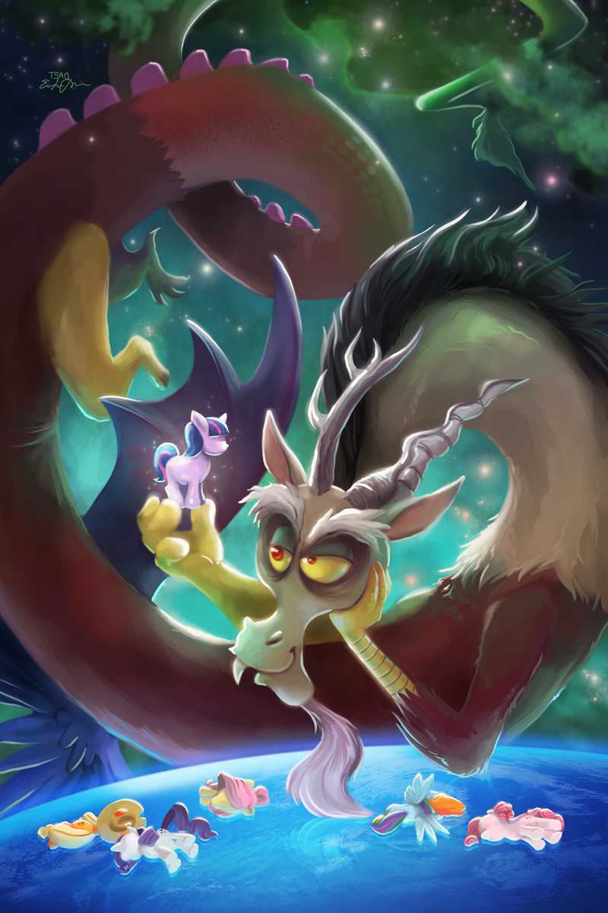

La serie comienza con un prólogo donde se menciona a las princesas que gobiernan Equestria, elevan el sol y la luna y mantienen la armonía. Durante una epoca, fueron los mosntruos y bestias quienes dominaban las tierras de equestria y la llegada de los ponies fue lo que traho tension. Estos mosntruos eran gobernados por Grogar, una cabra gigante temida x su cencerro poderoso que puede absorber todo tipo de magia y volverlo mas poderoso, pero fue Misty la valiente quien logro quitarle el censerro y debilitarlo para deharlo caer a un volcan. Asi fue como las bestias y mosntruos decidieron abandonar las tierras de equestrias hacia el desierto, lo que hiso que su poblacion dismunuyera. Misty deho el cencerro encerrado en las monstañas nebulosas, protegido x un hechizo de escudo de Star Swirld el barbado. Tras esto los ponies empezarian a expandirse x el reino de equestria, donde destacarian dos ponies hermanas muy poderosos, Celestia y Luna, quienes fueron capaces de mover el sol y la luna por si solas, sin la necesidad de tener a un grupo grande de unicornios. Al ser tan conocidas y aclamadas, lideraban esta expancion territorial, siendo capaces de establecer paz con grifos y dragones para poder vivir mas en paz en el mismo continente, dandoles tierras para que puedan vivir las 3 especies en equestria, aunque esto significara no tener ningun tipo de relacion entre estas especies, debido a lo que los ponies le hicieron a su antiguo gobernante Grogar. Star Swirl se convertiria en el maestro de Celestia y Luna, quienes se convertirian en alicornios tras ser las unicas ponies con la habilidad de manehar responsablemente desiciones para reinar y con la magia suficiente para ellas solas poder elevar el sol y la luna.
Tras un tiempo apareceria un ser mas poderoso que Celestia y Luna, incluso mas que grogar, un ser de otra dimension llamado Discord. En el inicio de la segunda temporada, en "The Return of Harmony", se menciona el período anterior al reinado de las princesas. La Princesa Celestia le dice a Twilight y a sus amigas que antes de que ella y la Princesa Luna derrotaran a Discord, que él gobernó Equestria, manteniéndolo en un estado de infelicidad y malestar. Celestia siguió describiéndolo, viendo cuán miserable era la vida para los ponis terrestres, los pegasos y los unicornios, ella Luna descubrieron los Elementos de la Armonía y los usaron en contra de Discord, volviéndolo piedra. El hechizo de Discord se rompió después porque, como Celestia explicó, "Luna y ella misma no están conectadas más a los elementos", así que Twilight y sus amigas usaron los Elementos de la Armonía para confinar a Discord en piedra de nuevo.